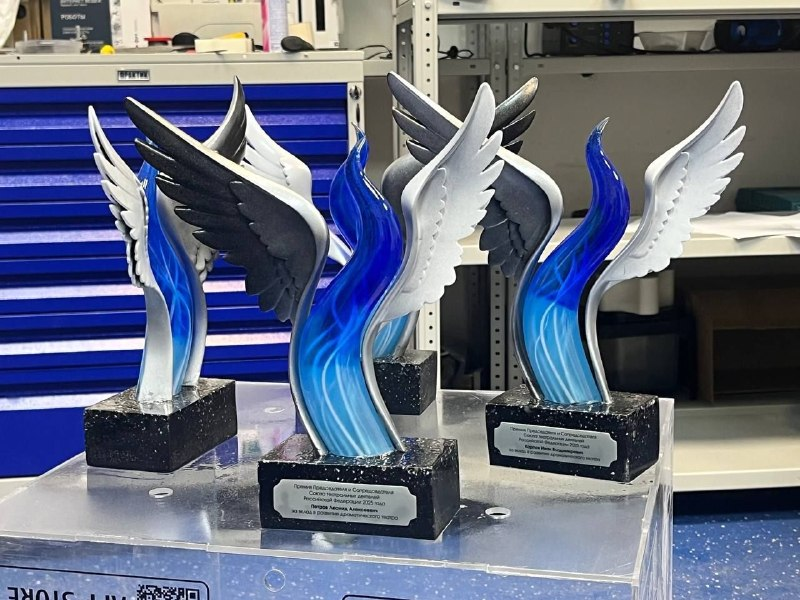
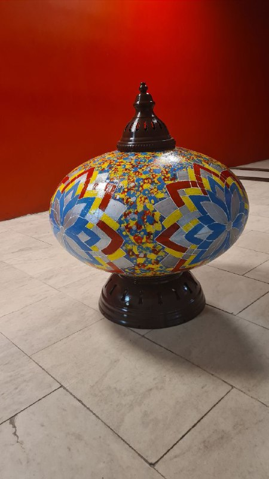
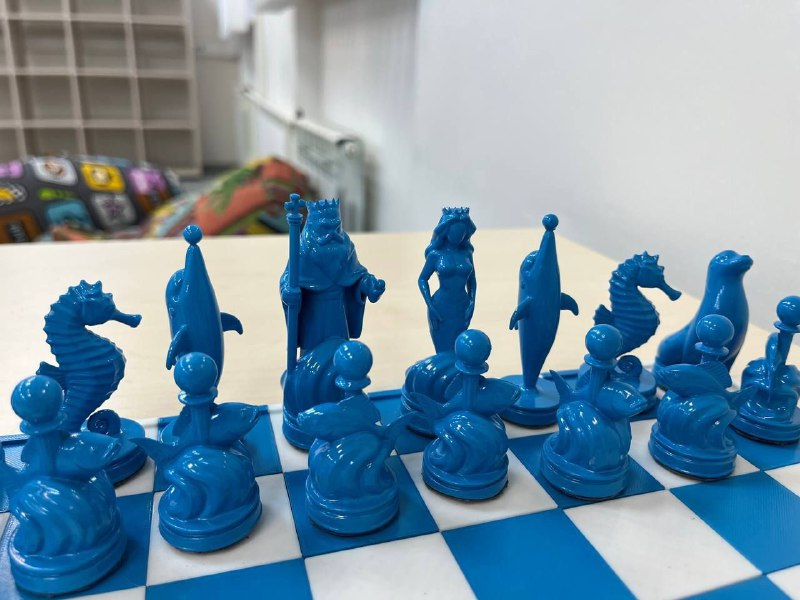
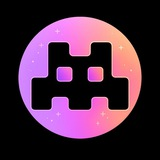
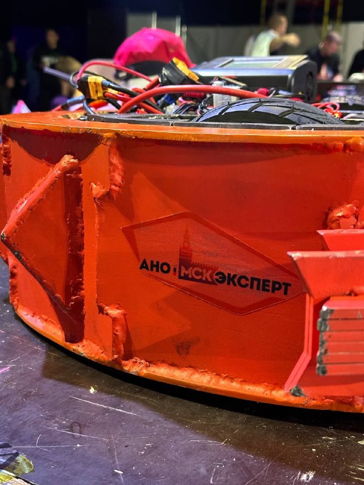

Награда · театр · 10 дней
Награда для премии Союза театральных деятелей
Полный цикл: идея, дизайн, производство и подготовка награды для премии СТД России.
Пост в канале →ООО «СТЕП_3Д»
3D-печать, промышленный дизайн, реверсивный инжиниринг, прототипирование и образовательные проекты — от эскиза до готовой детали.

Лаборатория прототипов, объектов и инженерных экспериментов



Кейсы с канала X.Lab
Награда · театр · 10 дней
Полный цикл: идея, дизайн, производство и подготовка награды для премии СТД России.
Пост в канале →МДМ · декорации · 5 дней
Габаритные лёгкие объекты для сцены: меньше 5 кг, отражают свет, сделаны с помощью 3D-печати.
Пост в канале →
Арт-объект · малая серия
Использование аддитивного производства для ограниченной серии скульптурного объекта.
Пост в канале →
Роботы · соревнования
Инженерная работа, прототипирование и участие команды в соревнованиях боевых роботов.
Пост в канале →Образование · AI
Практические подборки и занятия по AI-инструментам для учёбы, кода, презентаций и 3D-задач.
Пост в канале →Дизайн · объект
Авторский предметный проект на стыке дизайна, 3D-печати и визуальной идеи.
Пост в канале →Проекты
Быстрые макеты, функциональные детали и проверка конструкции до запуска производства.
Восстановление геометрии, измерения, CAD-модели, прототипирование и отчётность.
Практикумы по 3D-печати, моделированию, сканированию и инженерному мышлению.
Индивидуальные корпуса, крепления, арт-объекты, сувениры и технические решения.
Услуги
Что можно заказать
CAD-модель, подготовленная к печати, сборке или передаче подрядчику.
Деталь или объект для проверки формы, посадки, прочности и сценария использования.
Небольшой тираж изделий без запуска дорогой пресс-формы.
Награды, декорации, арт-объекты и визуальные элементы под дедлайн.
Технологии
Как работаем
Смотрим эскизы, фото, размеры, ограничения, сроки и назначение детали.
Подбираем материал, способ печати, конструкцию, посадки и постобработку.
Печатаем, проверяем геометрию, прочность, внешний вид и удобство сборки.
Исправляем слабые места и готовим объект к передаче, серии или демонстрации.
Подход
Мы соединяем цифровое проектирование и реальное производство: анализируем задачу, выбираем технологию, делаем прототип, проверяем ограничения и доводим объект до рабочего состояния.
Для кого
Прототипы, корпуса, крепления, оснастка, малые серии и проверка конструкций.
Декорации, награды, арт-объекты, бутафория и визуальные элементы под сроки.
Мастер-классы, инженерные практикумы, проектные занятия и демонстрационные модели.
Форматы работы
Напечатать, восстановить, смоделировать или доработать конкретную деталь.
Когда нужен объект к событию, съёмке, спектаклю, защите или презентации.
Тираж изделий без запуска пресс-формы и долгого производственного цикла.
Мастер-класс, интенсив или практикум по 3D-печати, CAD и инженерному мышлению.
Для расчёта
FAQ
Да. Можно начать с фото, эскиза, размеров или описания задачи. Мы подскажем, какой файл или замер нужен дальше.
Делаем оба этапа: проектирование, подготовку модели, печать, проверку и доработку.
Да, если понятна задача и есть доступный материал/оборудование. Для срочных проектов лучше сразу прислать размеры, фото и срок.
STEP_3D
Контакты
Напишите кратко: что нужно сделать, размеры, материал, срок, фото/эскиз и где будет использоваться изделие.